<meta charset="utf-8"><title>11/28夕方のコラム note貼り付け</title>
<style>
/* one column of numbered paste steps; text steps vs image steps differ by marker */
:root{--bg:#F5F4F0;--card:#FFFFFF;--ink:#1D2321;--mute:#5F665F;--line:#DCDAD2;--btn:#1F5FBF;--btnok:#2E8B4F;--img:#E9F3EC;--imgink:#22663B;--sans:'IBM Plex Sans JP','Hiragino Sans','Noto Sans JP',sans-serif}
@media (prefers-color-scheme:dark){:root:not([data-theme="light"]){--bg:#171A19;--card:#202423;--ink:#ECEDE8;--mute:#A3AAA2;--line:#343937;--btn:#4D8BE6;--btnok:#3FA866;--img:#1E2C23;--imgink:#8FD3A6;color-scheme:dark}}
:root[data-theme="dark"]{--bg:#171A19;--card:#202423;--ink:#ECEDE8;--mute:#A3AAA2;--line:#343937;--btn:#4D8BE6;--btnok:#3FA866;--img:#1E2C23;--imgink:#8FD3A6;color-scheme:dark}
body{background:var(--bg);color:var(--ink);font-family:var(--sans);font-size:15px;line-height:1.75;padding:20px 16px 60px}
main{max-width:680px;margin:0 auto;display:grid;gap:28px}
header h1{font-size:22px;margin:0 0 6px;text-wrap:balance}
header p{margin:0;color:var(--mute);font-size:14px}
nav{display:flex;gap:8px;flex-wrap:wrap;margin-top:12px}
nav a{border:1px solid var(--line);border-radius:999px;padding:4px 14px;color:var(--ink);text-decoration:none;font-size:14px;background:var(--card)}
.part h2{font-size:18px;line-height:1.5;margin:0 0 12px;text-wrap:balance;display:flex;gap:10px;align-items:baseline;flex-wrap:wrap}
.tag{font-size:13px;background:var(--ink);color:var(--bg);border-radius:6px;padding:1px 9px}
.steps{list-style:none;margin:0;padding:0;display:grid;gap:12px}
.st{background:var(--card);border:1px solid var(--line);border-radius:12px;padding:12px;min-width:0}
.hd{display:flex;align-items:center;gap:8px;margin-bottom:8px}
.no{width:26px;height:26px;border-radius:50%;background:var(--btn);color:#fff;display:inline-flex;align-items:center;justify-content:center;font-size:13px;font-weight:700;flex:0 0 26px}
.im .no{background:var(--btnok)}
.hd em{font-style:normal;font-size:12px;background:var(--img);color:var(--imgink);border-radius:6px;padding:0 8px}
.bx{font-size:13.5px;line-height:1.7;border:1px solid var(--line);border-radius:8px;padding:8px 10px;max-height:110px;overflow:auto;overflow-wrap:anywhere}
.bx.tall{max-height:150px}.bx p{margin:0 0 6px}.bx h2{font-size:14px;margin:8px 0 4px}.bx a{color:var(--btn)}
.st img{display:block;width:100%;max-width:100%;border:1px solid var(--line);border-radius:8px}
.sub{font-size:12.5px;color:var(--mute);margin:6px 0 0}
.cp{width:100%;margin-top:8px;padding:12px;border:0;border-radius:10px;background:var(--btn);color:#fff;font:600 15px var(--sans);cursor:pointer}
.cp.ok{background:var(--btnok)}.cp.dl{background:var(--btnok)}.cp:focus-visible{outline:3px solid var(--ink);outline-offset:2px}
.xh{font-size:15px;margin:20px 0 10px}
.fb{font-size:13px;line-height:1.7;margin:8px 0 0;padding:8px 10px;border-radius:8px;background:var(--img);color:var(--imgink)}
.opts{display:grid;grid-template-columns:repeat(auto-fill,minmax(240px,1fr));gap:10px}
.opt{min-width:0}.opt img{display:block;width:100%;border:1px solid var(--line);border-radius:8px}
.ol{display:flex;align-items:center;gap:8px;margin-top:6px}.ol b{font-size:13px;flex:0 0 auto}.ol .on{font-size:12.5px;color:var(--mute);flex:1;min-width:0}.ol .cp{width:auto;flex:0 0 auto;padding:9px 14px}.ol .cp{margin:0;padding:9px}
.toast{font-size:13px;color:var(--mute);margin-top:6px}
</style>
<main><header><h1>11/28夕方のコラム note貼り付け</h1><p>いま公開済みは6本です。青い番号は文章、緑は画像です。</p><nav><a href="#p1">1</a><a href="#p2">2</a><a href="#p3">3</a><a href="#p4">4</a><a href="#p5">5</a><a href="#p6">6</a></nav></header><section class="part" id="p1"><h2><span class="tag">OFF GRID</span>ハース小松代表「ここでは車の限界が、ほかのどのコースとも大きく違う」</h2><p class="sub">サイトに公開：16:18</p><ol class="steps">
<li class="st im"><div class="hd"><span class="no">1</span><b>見出し画像</b><em>画像</em></div>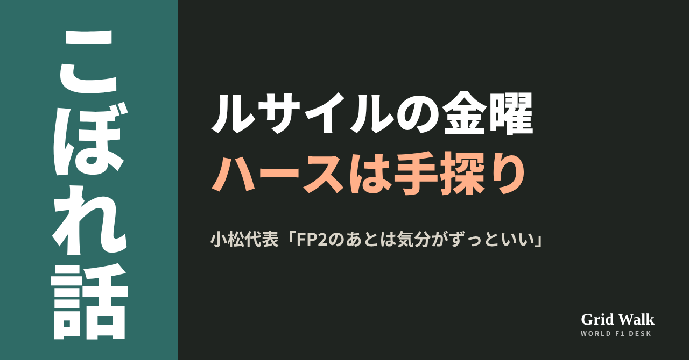<button class="cp dl" data-img="img/komatsu-haas-limitation-qatar-20261128.png" data-name="komatsu-haas-limitation-qatar-20261128_見出し画像.png">ダウンロード</button></li>
<li class="st"><div class="hd"><span class="no">2</span><b>タイトル</b></div><div class="bx" id="p1t">ハース小松代表「ここでは車の限界が、ほかのどのコースとも大きく違う」</div><button class="cp" data-plain="p1t">タイトルをコピー</button></li>
<li class="st"><div class="hd"><span class="no">3</span><b>本文</b></div><div class="bx tall" id="p1r"><p>第22戦カタールGPの金曜、ハースは2台とも下位で一日を終えました。FIAのFP2の結果では、ラファエル・カマラが17番手、オリバー・ベアマンが18番手。F1公式の結果では、FP1もカマラが15番手、ベアマンが17番手でした。小松礼雄代表は、ハース公式の金曜のリリースでこう振り返っています。</p><p>アウディとの7位争いの中身と、角田の10位が確定した話はサイトで → <a href="https://f1gridwalk.github.io/lens/komatsu-haas-limitation-qatar-20261128/?utm_source=note&amp;utm_campaign=komatsu-haas-limitation-qatar-20261128">https://f1gridwalk.github.io/lens/komatsu-haas-limitation-qatar-20261128/?utm_source=note&amp;utm_campaign=komatsu-haas-limitation-qatar-20261128</a></p><blockquote><p>「難しい金曜だった。ここでは車の限界が、ほかのどのコースとも大きく違うからだ」「FP1では、車のセットアップが外れすぎていたと思うが、ドライバーは2人ともできることをやってくれた。FP2に向けて車を良くして、とくにオリー（ベアマン）は前より満足していた」（小松代表、ハース公式／アメリカ）</p></blockquote><h2>FP1から一歩前へ</h2><p>小松代表によると、2台でいくつか違うことを試し、互いに学べたといいます。課題は決勝を想定した走りです。</p><blockquote><p>「まだ良くしなければならないことはあるが、FP2のあとは気分がずっといい」「レースペースには取り組む必要がある。そこにはやることがある。ただ、トラブルはなく、データは全部取れた。だから、仕事に取りかかる時だ」（小松代表、ハース公式／アメリカ）</p></blockquote><p>ベアマンは、燃料が軽いときも重いときも、車の良いバランスを見つけるのに苦しんだと話しています。</p><blockquote><p>「正直、厳しい一日だった」「FP2になるころには少し前進できた感じがあって、赤旗の前にソフトで走っていたラップは、やっとまともに感じられた」「燃料を多く積んだ走りでは、1回目の走行でタイヤに与えたダメージの一部を、グレイニングとともに引きずった」（ベアマン、ハース公式／アメリカ）</p></blockquote><p>カマラは、明日に向けて多くを学べたと話しています。</p><blockquote><p>「2つのセッションとも問題なく走れて、プログラムをこなし、やりたいことは全部できた」「簡単なコースではないが、セッションのたびに全体に慣れてきて、もう少しリスクを取れるようになる。とくにここはランオフエリアが広いので」（カマラ、ハース公式／アメリカ）</p></blockquote><h2>来年に向けたリアウイングの確認</h2><p>同じ日のFIAのチーム代表会見で、小松代表はFP1で試したリアウイングについて聞かれました。質問した記者は、マカレナ式と呼ばれる新しいウイングだと表現しています（ルールブック https://f1gridwalk.github.io/deep/rules/macarena-wing/ ）。</p><blockquote><p>「ええ、テストは実はうまくいった」「ラスベガスの金曜に入れようとして走らせたが、当然ながら一度も開くことができなかった。だからここでやっている」「ダウンフォースの水準が合っていないので、レースでは使わない。でも、作動の確認は済んだ」「来年に向けて自信を持って冬を迎えられるよう、年内にこのリアウイングを試すところまで、組織をかなり急がせた」（小松代表、FIA公式／国際）</p></blockquote><h2>アウディは2台とも前に</h2><p>F1公式のコンストラクターズの順位表では、ラスベガスGPを終えて、ハースが31点で7位、アウディが28点で8位です。FIAのFP2の結果では、アウディはガブリエル・ボルトレートが11番手、ニコ・ヒュルケンベルグが13番手。ボルトレートの1分24秒614は、ハースで速かったカマラの1分25秒962より1.348秒速いタイムでした（編集部の計算）。争いの中身は https://f1gridwalk.github.io/lens/haas-audi-seventh-place-20261125/ で、アウディの控訴が退けられて3点差のままになった話は https://f1gridwalk.github.io/lens/tsunoda-monza-tenth-confirmed-20261128/ で紹介しています。</p><p>編集部としては、ここでは車の限界がほかと大きく違うと小松代表が認めつつ、FP2で車を良くした点に、予選への手がかりがあると見ています。FP3は日本時間11月28日23時30分、予選は29日3時、決勝は30日1時です。</p><p><strong>一発の速さと決勝のペース。ハースがアウディの前で週末を終えるために、より大事なのはどちらだと思いますか？</strong></p><p>━━━━━━━━━━</p><p><strong>F1 Grid Walk では、世界のF1ニュースを毎日日本語でまとめています。</strong></p><p>海外の記事の要約を、毎日載せています。</p><p><a href="https://f1gridwalk.github.io/">https://f1gridwalk.github.io/</a></p><p>ほかの海外記事も読みたい方は、F1 Grid Walkへ。</p><p><a href="https://f1gridwalk.github.io/lens/komatsu-haas-limitation-qatar-20261128/">https://f1gridwalk.github.io/lens/komatsu-haas-limitation-qatar-20261128/</a></p><p>━━━━━━━━━━</p><p><a href="https://haasf1team.com/news/qatar-grand-prix-practice-recap">出典：ハース公式（アメリカ）</a></p><p><a href="https://www.fia.com/news/f1-2026-qatar-grand-prix-friday-press-conference-transcript">出典：FIA（国際）</a></p><p><a href="https://www.fia.com/system/files/decision-document/2026_qatar_grand_prix_-_free_practice_2_classification.pdf">出典：FIA（国際）</a></p><p><a href="https://www.formula1.com/en/results/2026/races/1301/qatar/practice/1">出典：F1公式サイト（イギリス）</a></p><p><a href="https://www.formula1.com/en/results/2026/team">出典：F1公式サイト（イギリス）</a></p></div><button class="cp" data-rich="p1r">本文をコピー</button></li>
<li class="st"><div class="hd"><span class="no">4</span><b>ハッシュタグ</b></div><div class="bx" id="p1h">#F1 #F1jp #ハース #小松礼雄 #ベアマン #カマラ #アウディ #カタールGP #コンストラクターズ #F1こぼれ話 #OFFGRID</div><button class="cp" data-plain="p1h">タグをコピー</button></li>
</ol><h3 class="xh">X</h3><ol class="steps">
<li class="st im"><div class="hd"><b>X用の画像</b><em>画像</em></div>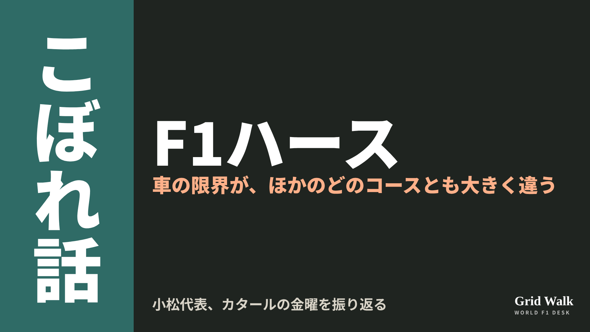<button class="cp dl" data-img="img/x_komatsu-haas-limitation-qatar-20261128.png" data-name="x_komatsu-haas-limitation-qatar-20261128.png">ダウンロード</button></li>
<li class="st"><div class="hd"><b>① noteをシェアするときの文</b></div><div class="bx" id="p1x0">ハースの小松代表、カタールの金曜を「ここでは車の限界が、ほかのどのコースとも大きく違う」と振り返りました。7位争いのアウディとは3点差。ハース公式の言葉からまとめました #F1jp #ハース #小松礼雄</div><button class="cp" data-plain="p1x0">コピー</button></li>
<li class="st"><div class="hd"><b>② ①への返信</b></div><div class="bx" id="p1x1">ほかの海外記事も読みたい方は、F1 Grid Walkへ。
https://f1gridwalk.github.io/lens/komatsu-haas-limitation-qatar-20261128/?utm_source=x&amp;utm_campaign=komatsu-haas-limitation-qatar-20261128</div><button class="cp" data-plain="p1x1">コピー</button></li>
<li class="st"><div class="hd"><b>③ ②への返信</b></div><div class="bx" id="p1x2">毎日の海外F1ニュースは、日本語でこちらにまとめています。
https://f1gridwalk.github.io/</div><button class="cp" data-plain="p1x2">コピー</button></li>
</ol></section><section class="part" id="p2"><h2><span class="tag">OFF GRID</span>縁石と砂利のルサイル　FP1のタイム抹消は記録32件</h2><p class="sub">サイトに公開：16:16</p><ol class="steps">
<li class="st im"><div class="hd"><span class="no">1</span><b>見出し画像</b><em>画像</em></div>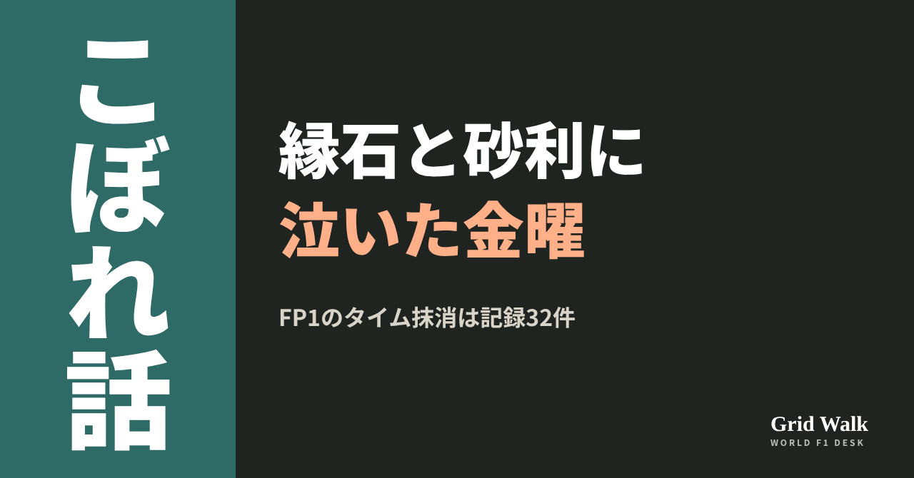<button class="cp dl" data-img="img/lusail-kerbs-gravel-friday-20261128.png" data-name="lusail-kerbs-gravel-friday-20261128_見出し画像.png">ダウンロード</button></li>
<li class="st"><div class="hd"><span class="no">2</span><b>タイトル</b></div><div class="bx" id="p2t">縁石と砂利のルサイル　FP1のタイム抹消は記録32件</div><button class="cp" data-plain="p2t">タイトルをコピー</button></li>
<li class="st"><div class="hd"><span class="no">3</span><b>本文</b></div><div class="bx tall" id="p2r"><p>第22戦カタールGPの金曜日、11月27日。ルサイルの縁石と砂利が各チームを手こずらせました。FIAのスチュワードの決定文書17は、1回目のフリー走行（FP1）でコースを外れたとしてタイムを消した記録の一覧で、編集部が数えると32件、12人分でした。</p><p>元の記事とFIAの文書へのリンク、タイム抹消の決まりの解説はサイトで → <a href="https://f1gridwalk.github.io/lens/lusail-kerbs-gravel-friday-20261128/?utm_source=note&amp;utm_campaign=lusail-kerbs-gravel-friday-20261128">https://f1gridwalk.github.io/lens/lusail-kerbs-gravel-friday-20261128/?utm_source=note&amp;utm_campaign=lusail-kerbs-gravel-friday-20261128</a></p><h2>4コーナーと最終コーナーに集中</h2><p>文書の一覧を編集部がコーナーごとに数えると、いちばん多かったのは4コーナーと16コーナーで、8件ずつ。15コーナーの5件が続きます。最後の16コーナーの8件には、違反した周に加えて次の周のタイムも消された「NEXT LAP」の行が4件あり、これも1件ずつ数えています。同じ周が2回載った例も2つあり、32件は周の数とは違います。</p><p>ドライバー別では、アストンマーティンのランス・ストロールが7件でいちばん多く、フェラーリのシャルル・ルクレールが4件。ウィリアムズのカルロス・サインツ、マクラーレンのオスカー・ピアストリ、アウディのガブリエル・ボルトレートが3件ずつです。FP1最速のメルセデスのアンドレア・キミ・アントネッリと、レッドブル、ハースの4人は一覧にいません。同じアストンマーティンでも、フェルナンド・アロンソの代わりに乗ったジャック・クロフォードは0件でした。</p><h2>2台を直したアストンマーティン</h2><p>アストンマーティンの金曜は、FP1がクロフォード19番手、ストロール20番手。FP2はアロンソが19番手、ストロールが20番手でした。チーフトラックサイドオフィサーのマイク・クラックは、チームの金曜のリリースでこう話しています。</p><blockquote><p>「高速コーナーの多い、容赦のないコースだ。縁石はきつく、グラベルトラップもある」「両方のセッションで、たくさんの車がコースを外れるのを見た。セッションの合間にも最中にも2台の修理に時間を使ったし、夜のうちにやる作業もある」（クラック、アストンマーティン公式）</p></blockquote><p>FIAのFP2の結果（決定文書21）では、ストロールが走ったのは15周。22台で2番目に少ない周回です。本人はこう話しています。</p><blockquote><p>「今夜は、車をこのコースに合ったもっと良い範囲に入れるために、取り組むことがいくつかある」（ストロール、アストンマーティン公式）</p></blockquote><p>イタリアのFormula1.itは、この日を黒い金曜日と呼び、トップとの約3秒の差を伝えています（要約 https://f1gridwalk.github.io/news/it-formula1it-aston-martin-qatar-black-friday/ ）。</p><h2>ガスリーは縁石で底を打つ</h2><p>FP2では赤旗が2回出て、セッションは13分延びました（アストンマーティン公式）。F1公式によると、1回目の赤旗はコースに出た砂利のためです。FP2で最少の14周に終わったアルピーヌのピエール・ガスリーは、その中断のあと冷えたタイヤで攻めてスピンし、2回目の赤旗の原因になりました。</p><blockquote><p>「最後は縁石に乗って、底を打って、車のコントロールを失った」（ガスリー、F1公式）</p></blockquote><p>傷めたのは床で、土曜には直るといいます。マネージング・ディレクターのスティーブ・ニールセンはこう話しました。</p><blockquote><p>「2人ともバランスに満足していなくて、それがペースに、とくに高速のところに出ている」「だから、全部がドライバーのミスだとは言わない」（ニールセン、F1公式）</p></blockquote><p>週末前のプレビューでフランコ・コラピントは「コーナーの出口のすぐ近くにグラベルトラップがあるから、このコースはミスを大きく罰する」と話していました（アルピーヌ公式）。</p><p>金曜の32件が予選でも同じように出るかは、まだわかりません。予選は日本時間29日3時から。タイム抹消の決まりは https://f1gridwalk.github.io/deep/rules/lap-time-deleted/ 、フェラーリの金曜は https://f1gridwalk.github.io/lens/leclerc-something-unusual-qatar-20261128/ で。</p><p><strong>縁石と砂利のルサイル。予選でタイムがいちばん消されるのは、どのコーナーだと思いますか？</strong></p><p>━━━━━━━━━━</p><p><strong>F1 Grid Walk では、世界のF1ニュースを毎日日本語でまとめています。</strong></p><p>海外の記事の要約を、毎日載せています。</p><p><a href="https://f1gridwalk.github.io/">https://f1gridwalk.github.io/</a></p><p>ほかの海外記事も読みたい方は、F1 Grid Walkへ。</p><p><a href="https://f1gridwalk.github.io/lens/lusail-kerbs-gravel-friday-20261128/">https://f1gridwalk.github.io/lens/lusail-kerbs-gravel-friday-20261128/</a></p><p>━━━━━━━━━━</p><p><a href="https://www.fia.com/system/files/decision-document/2026_qatar_grand_prix_-_infringement_-_free_practice_1_deleted_lap_times.pdf">出典：FIA（国際）</a></p><p><a href="https://www.fia.com/system/files/decision-document/2026_qatar_grand_prix_-_free_practice_2_classification.pdf">出典：FIA（国際）</a></p><p><a href="https://www.astonmartinf1.com/en-GB/races/2026-qatar-gp">出典：アストンマーティン公式（イギリス）</a></p><p><a href="https://www.formula1.com/en/latest/article/its-never-nice-gasly-explains-dramatic-high-speed-spin-during-qatar-practice.11hIcFNT6zuvEG0mwAggDn">出典：F1公式サイト（イギリス）</a></p><p><a href="https://www.alpinef1.com/news/qatar-grand-prix-preview">出典：アルピーヌ公式（フランス）</a></p><p><a href="https://www.formula1.it/news/34276/1/aston-martin-venerdi-nero-in-qatar-due-auto-da-riparare-e-un-gap-di-3-secondi">出典：Formula1.it（イタリア）</a></p></div><button class="cp" data-rich="p2r">本文をコピー</button></li>
<li class="st"><div class="hd"><span class="no">4</span><b>ハッシュタグ</b></div><div class="bx" id="p2h">#F1 #F1jp #カタールGP #ルサイル #アストンマーティン #アルピーヌ #ストロール #ガスリー #トラックリミット #フリー走行 #F1こぼれ話 #OFFGRID</div><button class="cp" data-plain="p2h">タグをコピー</button></li>
</ol><h3 class="xh">X</h3><ol class="steps">
<li class="st im"><div class="hd"><b>X用の画像</b><em>画像</em></div>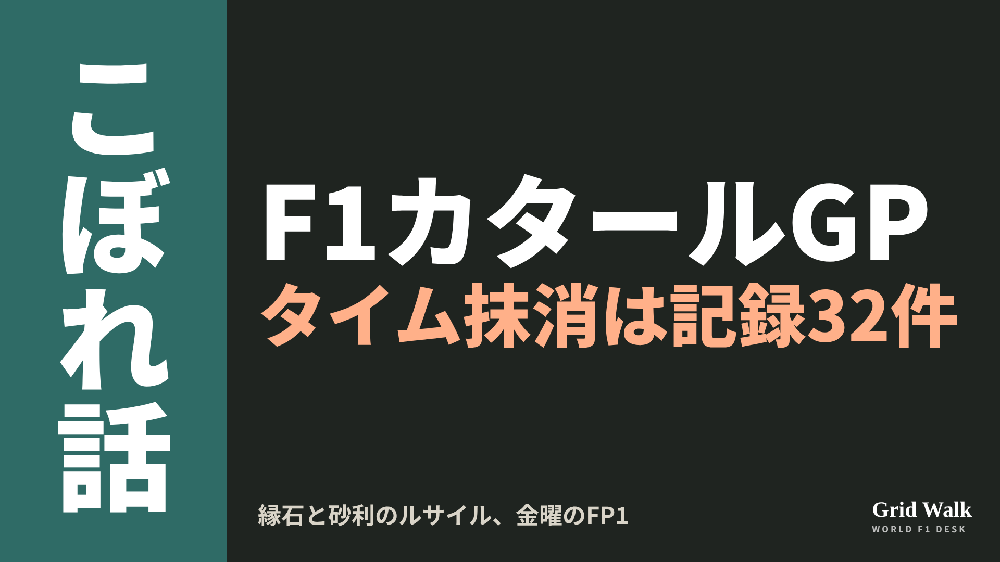<button class="cp dl" data-img="img/x_lusail-kerbs-gravel-friday-20261128.png" data-name="x_lusail-kerbs-gravel-friday-20261128.png">ダウンロード</button></li>
<li class="st"><div class="hd"><b>① noteをシェアするときの文</b></div><div class="bx" id="p2x0">カタールFP1、コースの外を走ってタイムを消された記録は32件。編集部がFIAの文書を数えると、多かったのは4コーナーと16コーナーでした #F1jp #カタールGP</div><button class="cp" data-plain="p2x0">コピー</button></li>
<li class="st"><div class="hd"><b>② ①への返信</b></div><div class="bx" id="p2x1">ほかの海外記事も読みたい方は、F1 Grid Walkへ。
https://f1gridwalk.github.io/lens/lusail-kerbs-gravel-friday-20261128/?utm_source=x&amp;utm_campaign=lusail-kerbs-gravel-friday-20261128</div><button class="cp" data-plain="p2x1">コピー</button></li>
<li class="st"><div class="hd"><b>③ ②への返信</b></div><div class="bx" id="p2x2">毎日の海外F1ニュースは、日本語でこちらにまとめています。
https://f1gridwalk.github.io/</div><button class="cp" data-plain="p2x2">コピー</button></li>
</ol></section><section class="part" id="p3"><h2><span class="tag">OFF GRID</span>ノリス「メルセデスは別のレベルにいる」　差は約0.7秒と見積もる</h2><p class="sub">サイトに公開：16:14</p><ol class="steps">
<li class="st im"><div class="hd"><span class="no">1</span><b>見出し画像</b><em>画像</em></div>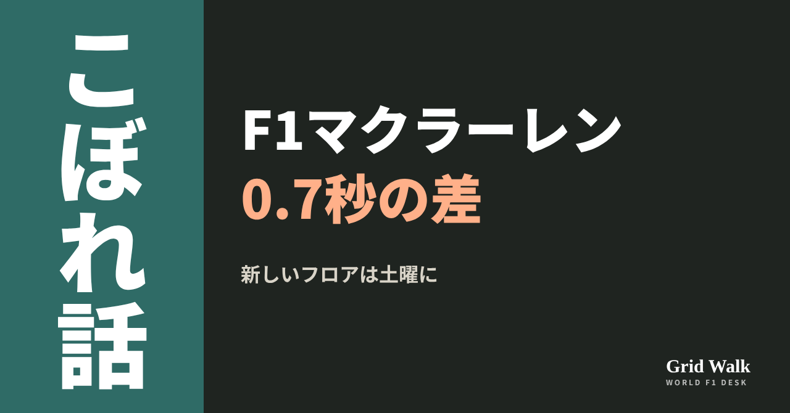<button class="cp dl" data-img="img/norris-mercedes-different-level-20261128.png" data-name="norris-mercedes-different-level-20261128_見出し画像.png">ダウンロード</button></li>
<li class="st"><div class="hd"><span class="no">2</span><b>タイトル</b></div><div class="bx" id="p3t">ノリス「メルセデスは別のレベルにいる」　差は約0.7秒と見積もる</div><button class="cp" data-plain="p3t">タイトルをコピー</button></li>
<li class="st"><div class="hd"><span class="no">3</span><b>本文</b></div><div class="bx tall" id="p3r"><p>第22戦カタールGPの金曜日、11月27日。マクラーレンのランド・ノリスは2回目のフリー走行（FP2）を3番手、オスカー・ピアストリは4番手で終えました。それでもMotorsport.comによると、ノリスは走行のあと、こう話しています。</p><p>元の記事へのリンクと、金曜のロングランの試算を読み解いたコラムへの案内はサイトで → <a href="https://f1gridwalk.github.io/lens/norris-mercedes-different-level-20261128/?utm_source=note&amp;utm_campaign=norris-mercedes-different-level-20261128">https://f1gridwalk.github.io/lens/norris-mercedes-different-level-20261128/?utm_source=note&amp;utm_campaign=norris-mercedes-different-level-20261128</a></p><blockquote><p>「メルセデス以外のみんなとくらべれば、僕たちは悪くないと思う」「ほかのみんなとくらべて、メルセデスは別のレベルにいる。全体として、僕たちがどれだけ離れているかがよくわかる」（ノリス、Motorsport.com／イギリス）</p></blockquote><p>FIAの公式結果（決定文書21）でFP2を見ると、トップはメルセデスのアンドレア・キミ・アントネッリで1分23秒077、2番手はジョージ・ラッセルです。ノリスは1分23秒522で0秒445遅れ、ピアストリはさらに0秒027後ろ。5、6番手のレッドブルの2台までが、ノリスから0秒061の中に並びました。F1公式によると、アントネッリはこのタイムをミディアムタイヤで、ノリスはソフトで出しています。</p><h2>ノリスの見積もりは約0.7秒</h2><blockquote><p>「差はたぶんそのとおりだと思う。1周あたり0.7秒くらいかな。そこまで近づけてもいない」（ノリス、Motorsport.com／イギリス）</p></blockquote><p>メルセデスの速さは、このコースだけのものではないとも見ています。</p><blockquote><p>「ここで何かが彼らにとくによく合っている、というわけじゃない」「ここで速いなら、同じ理由でほかの多くの場所でも速い。それははっきりわかる」（ノリス、Motorsport.com／イギリス）</p></blockquote><p>F1公式の記事では、言葉はもっと厳しめです。</p><blockquote><p>「メルセデスに対しては、これ以上離されたことはなかったと思う」「今日の彼らは、僕たちとはカテゴリーが違うように見える。どのコーナーでも、ずっと速い」（ノリス、F1公式／イギリス）</p></blockquote><blockquote><p>「だから、戦いは3位をめぐるものだと思う」「ペースはレッドブルと同じくらいで、フェラーリともだいたい同じくらいに見える」（ノリス、F1公式／イギリス）</p></blockquote><h2>新しいフロアは金曜に使わず</h2><p>マクラーレンは金曜、古い仕様のフロアで走りました。F1公式によると、新しいフロアを傷めないための判断で、ルサイルではコーナーの出口で縁石に乗ると、フロアの部品を傷める恐れがあるといいます。シニア・レーシングディレクターのランディ・シンは、こう説明しています。</p><blockquote><p>「今日は古い仕様のフロアで走った。おもな理由は、ほかの車がはみ出してフロアを壊しているのが見えたからで、新しい仕様のフロアはどれも傷めたくなかった」「新しい仕様は明日つける。大きな違いにはならないけど、どれも僕たちを正しい方向に押してくれる小さなことだ」（シン、F1公式／イギリス）</p></blockquote><p>ノリスの期待も控えめです。</p><blockquote><p>「ラスベガスとくらべて、ここで（新しいフロアが）どれだけ助けになるかはわからない」「僕たちに必要なだけの差にはならない」「少しでも、何もないよりはいい」（ノリス、F1公式／イギリス）</p></blockquote><p>F1公式の順位表では、ラスベガスGPを終えて、コンストラクターズ3位のレッドブルが440点、4位のマクラーレンが431点で、差は9点です。編集部としては、カタールでのマクラーレンの本当の相手はメルセデスではなく、金曜にほぼ並んだレッドブルだと見ています。ノリス自身、ペースはレッドブルと同じくらいだと話しているからです。新しいフロアの効き目は、日本時間28日23時30分からのFP3と、29日3時からの予選で見えてきます。金曜のロングランの差の試算は https://f1gridwalk.github.io/lens/antonelli-longrun-one-second-20261128/ で。</p><p><strong>メルセデスとの差を約0.7秒と見積もったマクラーレン。新しいフロアをつけて、レッドブルの前に出られると思いますか？</strong></p><p>━━━━━━━━━━</p><p><strong>F1 Grid Walk では、世界のF1ニュースを毎日日本語でまとめています。</strong></p><p>海外の記事の要約を、毎日載せています。</p><p><a href="https://f1gridwalk.github.io/">https://f1gridwalk.github.io/</a></p><p>ほかの海外記事も読みたい方は、F1 Grid Walkへ。</p><p><a href="https://f1gridwalk.github.io/lens/norris-mercedes-different-level-20261128/">https://f1gridwalk.github.io/lens/norris-mercedes-different-level-20261128/</a></p><p>━━━━━━━━━━</p><p><a href="https://sports.yahoo.com/f1/articles/lando-norris-mercedes-different-level-200437415.html">出典：Motorsport.com（Yahoo Sports転載）（イギリス）</a></p><p><a href="https://www.formula1.com/en/latest/article/i-dont-think-weve-been-further-off-norris-worried-by-mclarens-deficit-to-mercedes-in-qatar.6mwnUPpxnOsIv6YJ7O6Lgm">出典：F1公式サイト（イギリス）</a></p><p><a href="https://www.fia.com/system/files/decision-document/2026_qatar_grand_prix_-_free_practice_2_classification.pdf">出典：FIA（国際）</a></p><p><a href="https://www.formula1.com/en/results/2026/team">出典：F1公式サイト（イギリス）</a></p><p><a href="https://www.formula1.com/en/racing/2026">出典：F1公式サイト（イギリス）</a></p></div><button class="cp" data-rich="p3r">本文をコピー</button></li>
<li class="st"><div class="hd"><span class="no">4</span><b>ハッシュタグ</b></div><div class="bx" id="p3h">#F1 #F1jp #マクラーレン #ノリス #ピアストリ #カタールGP #フリー走行 #F1こぼれ話 #OFFGRID</div><button class="cp" data-plain="p3h">タグをコピー</button></li>
</ol><h3 class="xh">X</h3><ol class="steps">
<li class="st im"><div class="hd"><b>X用の画像</b><em>画像</em></div>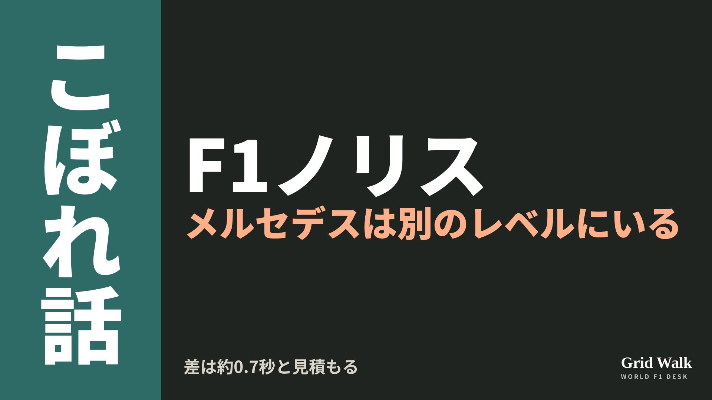<button class="cp dl" data-img="img/x_norris-mercedes-different-level-20261128.png" data-name="x_norris-mercedes-different-level-20261128.png">ダウンロード</button></li>
<li class="st"><div class="hd"><b>① noteをシェアするときの文</b></div><div class="bx" id="p3x0">ノリス「メルセデスは別のレベルにいる」。カタールの金曜、マクラーレンは差を約0.7秒と見積もりました。新しいフロアを使わなかった理由も #F1jp #マクラーレン</div><button class="cp" data-plain="p3x0">コピー</button></li>
<li class="st"><div class="hd"><b>② ①への返信</b></div><div class="bx" id="p3x1">ほかの海外記事も読みたい方は、F1 Grid Walkへ。
https://f1gridwalk.github.io/lens/norris-mercedes-different-level-20261128/?utm_source=x&amp;utm_campaign=norris-mercedes-different-level-20261128</div><button class="cp" data-plain="p3x1">コピー</button></li>
<li class="st"><div class="hd"><b>③ ②への返信</b></div><div class="bx" id="p3x2">毎日の海外F1ニュースは、日本語でこちらにまとめています。
https://f1gridwalk.github.io/</div><button class="cp" data-plain="p3x2">コピー</button></li>
</ol></section><section class="part" id="p4"><h2><span class="tag">OFF GRID</span>フェルスタッペン「少しばらばらすぎる」　想定外のアンダーステア</h2><p class="sub">サイトに公開：16:12</p><ol class="steps">
<li class="st im"><div class="hd"><span class="no">1</span><b>見出し画像</b><em>画像</em></div>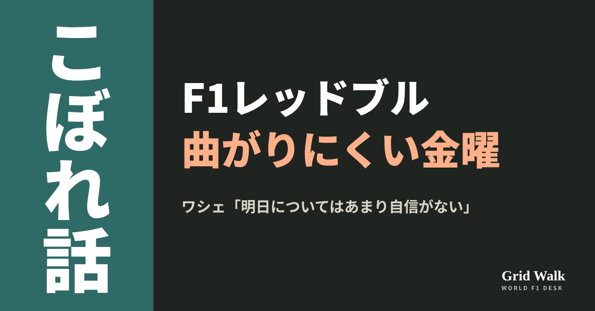<button class="cp dl" data-img="img/verstappen-disconnected-understeer-20261128.png" data-name="verstappen-disconnected-understeer-20261128_見出し画像.png">ダウンロード</button></li>
<li class="st"><div class="hd"><span class="no">2</span><b>タイトル</b></div><div class="bx" id="p4t">フェルスタッペン「少しばらばらすぎる」　想定外のアンダーステア</div><button class="cp" data-plain="p4t">タイトルをコピー</button></li>
<li class="st"><div class="hd"><span class="no">3</span><b>本文</b></div><div class="bx tall" id="p4r"><p>第22戦カタールGPの金曜日、11月27日。マックス・フェルスタッペン（レッドブル）は、2回のフリー走行を6番手と5番手で終えました。F1公式サイトの記事によると、1日を通してアンダーステアに苦しんだといいます。本人の言葉はこうです。</p><p>アンダーステアと執行猶予付きの罰の用語解説、元の記事とFIAの文書へのリンクはサイトで → <a href="https://f1gridwalk.github.io/lens/verstappen-disconnected-understeer-20261128/?utm_source=note&amp;utm_campaign=verstappen-disconnected-understeer-20261128">https://f1gridwalk.github.io/lens/verstappen-disconnected-understeer-20261128/?utm_source=note&amp;utm_campaign=verstappen-disconnected-understeer-20261128</a></p><blockquote><p>「少し難しい一日だった」「車のバランスが、今はたぶん、速く走るには少しばらばらすぎる。だから、そこを直さないといけない」（フェルスタッペン、F1公式サイト）</p></blockquote><blockquote><p>「全体のバランスが、今はできていない。それで、ラップタイムをかなり失っている」（同）</p></blockquote><h2>FP1は2台ともアンダーステア</h2><p>アンダーステアは、ハンドルを切っても車が思ったほど曲がらない状態です（用語集 https://f1gridwalk.github.io/deep/rules/understeer/ ）。テクニカルディレクターのピエール・ワシェは、F1公式サイトにこう話しています。</p><blockquote><p>「FP1では、2人とも車のバランスが想定よりずっとアンダーステア寄りだったのは明らかだ」「マックスはアイザック以上だったが、似た問題だった」（ワシェ、F1公式サイト）</p></blockquote><blockquote><p>「完全には片づかなかった。方向は正しかったが、理想的ではない妥協があった」「車はかなり良くできたが、まだやることは多い」（同）</p></blockquote><p>チームメイトのアイザック・ハジャーもバランスに苦しみ、FP1の3番手から、FP2では6番手に下がったと記事は書いています。FIAのFP2の公式結果（決定文書21）では、フェルスタッペンは1分23秒576でトップのアンドレア・キミ・アントネッリ（メルセデス）から0.499秒差、ハジャーはそのわずか0.007秒後ろでした。ブラジルのGrande Prêmio（英語版）によると、アントネッリの最速タイムはミディアムタイヤで、フェルスタッペンの最速はソフトで出たものです。</p><h2>高速コーナーのメルセデス</h2><p>メルセデスについて、フェルスタッペンはこう話しました。</p><blockquote><p>「短い走りでも長い走りでも、かなり先にいるように見える」（フェルスタッペン、F1公式サイト）</p></blockquote><blockquote><p>「彼ら（メルセデス）は高速コーナーで、とても、とても強いようだ」「彼らに並ぶのは大きな挑戦になる」「自分たちに集中して、まず自分たちの問題を直し、どこにいるかを見る。でも、明日についてはあまり自信がない」（ワシェ、F1公式サイト）</p></blockquote><p>F1公式の順位表では、ラスベガスGPを終えてレッドブルはコンストラクターズ3位の440点、4位のマクラーレンは431点で、差は9点です。</p><h2>FP1のピットで、罰金3万ユーロ</h2><p>スチュワードの決定文書18によると、FP1の現地16時45分、メカニックがまだ作業しているのに、ハジャーの車がピットの作業位置から動き出しかけました。</p><p>チームの説明では、新しく入ったスタッフが、左後ろのブレーキを冷やす送風機を置いていました。ふだんの手順にはない作業です。それを外す前に車を送り出す手順が始まり、送風機の一部が残ったまま車が動き出し、スタッフの足が左後ろの車輪に触れました。スチュワードは、けがにつながりかねなかったと書いています。チームは手順のミスを認めました。</p><p>罰は罰金3万ユーロで、うち2万ユーロは、12か月のあいだ同じ条項への違反がなければ払わなくてよい執行猶予付きです（用語集 https://f1gridwalk.github.io/deep/rules/suspended-penalty/ ）。</p><p>編集部としては、FP1から問題を抱えたぶん、FP2で妥協を残したまま予選を迎えるのがレッドブルの苦しいところだと見ています。ワシェ自身が明日に自信がないと口にしているからです。カタールでフェルスタッペンの無線を担当するトム・ハートの話はコラム https://f1gridwalk.github.io/lens/hart-verstappen-qatar-20261128/ で、金曜のロングランの試算は https://f1gridwalk.github.io/lens/antonelli-longrun-one-second-20261128/ で。</p><p><strong>金曜のアンダーステア、レッドブルは一晩で直せると思いますか？ それとも、決勝まで引きずるでしょうか？</strong></p><p>━━━━━━━━━━</p><p><strong>F1 Grid Walk では、世界のF1ニュースを毎日日本語でまとめています。</strong></p><p>海外の記事の要約を、毎日載せています。</p><p><a href="https://f1gridwalk.github.io/">https://f1gridwalk.github.io/</a></p><p>ほかの海外記事も読みたい方は、F1 Grid Walkへ。</p><p><a href="https://f1gridwalk.github.io/lens/verstappen-disconnected-understeer-20261128/">https://f1gridwalk.github.io/lens/verstappen-disconnected-understeer-20261128/</a></p><p>━━━━━━━━━━</p><p><a href="https://www.formula1.com/en/latest/article/a-bit-of-a-difficult-day-verstappen-and-red-bull-left-looking-for-car-balance-after-friday-in-qatar.zvqj1nQ6dBT2PSxEzzKWP">出典：F1公式サイト（イギリス）</a></p><p><a href="https://grandepremio.com/en/f1/verstappen-admits-mercedes-is-way-ahead-as-red-bull-struggles-for-answers-in-qatar/">出典：Grande Prêmio（英語版）（ブラジル）</a></p><p><a href="https://www.fia.com/system/files/decision-document/2026_qatar_grand_prix_-_infringement_-_car_6_-_unsafe_act.pdf">出典：FIA（国際）</a></p><p><a href="https://www.fia.com/system/files/decision-document/2026_qatar_grand_prix_-_free_practice_2_classification.pdf">出典：FIA（国際）</a></p><p><a href="https://www.formula1.com/en/results/2026/team">出典：F1公式サイト（イギリス）</a></p></div><button class="cp" data-rich="p4r">本文をコピー</button></li>
<li class="st"><div class="hd"><span class="no">4</span><b>ハッシュタグ</b></div><div class="bx" id="p4h">#F1 #F1jp #レッドブル #フェルスタッペン #ハジャー #ワシェ #カタールGP #フリー走行 #アンダーステア #F1こぼれ話 #OFFGRID</div><button class="cp" data-plain="p4h">タグをコピー</button></li>
</ol><h3 class="xh">X</h3><ol class="steps">
<li class="st im"><div class="hd"><b>X用の画像</b><em>画像</em></div>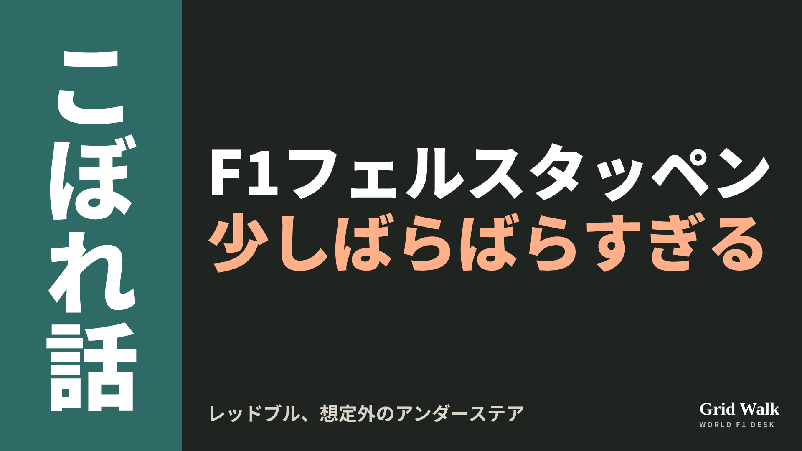<button class="cp dl" data-img="img/x_verstappen-disconnected-understeer-20261128.png" data-name="x_verstappen-disconnected-understeer-20261128.png">ダウンロード</button></li>
<li class="st"><div class="hd"><b>① noteをシェアするときの文</b></div><div class="bx" id="p4x0">フェルスタッペン、カタールの金曜の車を「少しばらばらすぎる」。レッドブルは想定外のアンダーステアに苦しみました。FP1の罰金の件も #F1jp #フェルスタッペン</div><button class="cp" data-plain="p4x0">コピー</button></li>
<li class="st"><div class="hd"><b>② ①への返信</b></div><div class="bx" id="p4x1">ほかの海外記事も読みたい方は、F1 Grid Walkへ。
https://f1gridwalk.github.io/lens/verstappen-disconnected-understeer-20261128/?utm_source=x&amp;utm_campaign=verstappen-disconnected-understeer-20261128</div><button class="cp" data-plain="p4x1">コピー</button></li>
<li class="st"><div class="hd"><b>③ ②への返信</b></div><div class="bx" id="p4x2">毎日の海外F1ニュースは、日本語でこちらにまとめています。
https://f1gridwalk.github.io/</div><button class="cp" data-plain="p4x2">コピー</button></li>
</ol></section><section class="part" id="p5"><h2><span class="tag">OFF GRID</span>ピレリ「今季いちばん厳しいコース」　左前タイヤと27周の壁</h2><p class="sub">サイトに公開：16:10</p><ol class="steps">
<li class="st im"><div class="hd"><span class="no">1</span><b>見出し画像</b><em>画像</em></div>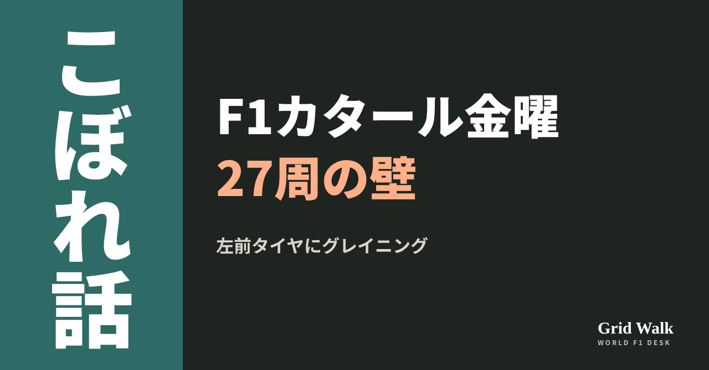<button class="cp dl" data-img="img/pirelli-qatar-most-demanding-20261128.png" data-name="pirelli-qatar-most-demanding-20261128_見出し画像.png">ダウンロード</button></li>
<li class="st"><div class="hd"><span class="no">2</span><b>タイトル</b></div><div class="bx" id="p5t">ピレリ「今季いちばん厳しいコース」　左前タイヤと27周の壁</div><button class="cp" data-plain="p5t">タイトルをコピー</button></li>
<li class="st"><div class="hd"><span class="no">3</span><b>本文</b></div><div class="bx tall" id="p5r"><p>カタールGPの金曜を終えて、ピレリのチーフエンジニア、シモーネ・ベラは、11月27日のピレリのリリースでこう話しました。</p><p>グレイニングとタイヤの空気圧、周回の上限のルールブックと、元の記事へのリンクはサイトで → <a href="https://f1gridwalk.github.io/lens/pirelli-qatar-most-demanding-20261128/?utm_source=note&amp;utm_campaign=pirelli-qatar-most-demanding-20261128">https://f1gridwalk.github.io/lens/pirelli-qatar-most-demanding-20261128/?utm_source=note&amp;utm_campaign=pirelli-qatar-most-demanding-20261128</a></p><blockquote><p>「カタールは今回も、タイヤにとって今季いちばん厳しいコースだということを示している」（ベラ、ピレリ公式／イタリア）</p></blockquote><h2>汚れた路面と、左前のグレイニング</h2><blockquote><p>「グレイニングは、路面の汚れと空力の荷重の大きさにうながされ、とくに左前のタイヤではっきり見られた」「この現象が摩耗を早め、いくつものタイヤがとても高い摩耗の水準に達した」（ベラ、ピレリ公式／イタリア）</p></blockquote><p>グレイニングは、タイヤの表面から細かい粒状のゴムがはがれ、でこぼこになってグリップが落ちる現象です。しくみはルールブック https://f1gridwalk.github.io/deep/rules/graining/ で。イギリスのThe Raceは11月27日、いちばん傷んだ左前のセットは、燃料を多く積んだ走りでわずか15周のうちに、部分的に摩耗が100%に達したと報じました。グレイニングは3種類すべてに出て、とくにミディアム（C2）とソフト（C3）で強かったといいます。路面の荒れと、2026年のクルマのダウンフォースの小ささで車が滑ることが原因とみられる、と記事は伝えています。</p><h2>27周は守れるか</h2><p>ピレリの事前の発表で、今年は1セット27周が上限です。決勝は57周なので、少なくとも2回はピットに入ります。決まりはルールブック https://f1gridwalk.github.io/deep/rules/tyre-stint-limit/ に。The Raceによると、ピレリは金曜のタイヤを研究所で切って調べ、その結果で27周を続けるかを決めるとしていました。11月28日夕方（日本時間）の時点で、変更の発表は見つかっていません。</p><blockquote><p>「構造の問題がなければ、いずれにしても27周は維持する」「決勝ではグレイニングが減るとわかっているからだ」（ベラ、The Race／イギリス）</p></blockquote><p>もう1つの手は空気圧です。記事によると、前輪は週末前に決めた29psiで、大会に入る時点の値として過去最高。ただ、上げれば接地面が小さくなり、グレイニングが増えかねないことをベラは承知している、と記事は書いています。空気圧の決まりはルールブック https://f1gridwalk.github.io/deep/rules/tyre-pressure/ で。</p><blockquote><p>「だから、できれば空気圧は上げたくない」「でも、構造を守るために必要なら、当然検討する」（ベラ、The Race／イギリス）</p></blockquote><h2>ハードを2セット残したチーム</h2><p>リリースでベラは、性能の落ちはとくに前輪で大きく、タイヤを守るための制限がなくても2ストップがおそらくいちばん競争力のある作戦だっただろう、と話しました。目を向けたのは、いちばん硬いハード（C1）です。</p><blockquote><p>「ハードも注目に値する。使ったチームは限られていたが、性能がとても安定していた」「だから、C1を2セット残しているチームは、決勝でとくに興味深い作戦の選択肢を持てるかもしれない」（ベラ、ピレリ公式／イタリア）</p></blockquote><p>リリースによると、FP2でハードを使ったのはガブリエル・ボルトレート（アウディ）ひとりで、1セットで24周。ミディアムではジョージ・ラッセル、アンドレア・キミ・アントネッリ（ともにメルセデス）、アイザック・ハジャー（レッドブル）が1セット25周を走りました。The Raceによると、ピレリの分析では性能の落ちが大きく、上限いっぱい走るのは遅すぎる。記事は19周ずつ3本が理にかなうとしています。作戦の落とし穴は https://f1gridwalk.github.io/lens/qatar-three-stop-trap-20261127/ 、ロングランの試算は https://f1gridwalk.github.io/lens/antonelli-longrun-one-second-20261128/ で。</p><p>編集部としては、決勝の作戦の幅を決めるのは、研究所の答えだと見ています。27周が残るなら、ハードを2セット持つ車には長く引っぱる手が残りそうですが、上限が縮めば、その余地も小さくなるからです。</p><p><strong>上限を縮めるか、空気圧を上げるか。カタールのタイヤを守るなら、あなたはどちらがいいと思いますか？</strong></p><p>━━━━━━━━━━</p><p><strong>F1 Grid Walk では、世界のF1ニュースを毎日日本語でまとめています。</strong></p><p>海外の記事の要約を、毎日載せています。</p><p><a href="https://f1gridwalk.github.io/">https://f1gridwalk.github.io/</a></p><p>ほかの海外記事も読みたい方は、F1 Grid Walkへ。</p><p><a href="https://f1gridwalk.github.io/lens/pirelli-qatar-most-demanding-20261128/">https://f1gridwalk.github.io/lens/pirelli-qatar-most-demanding-20261128/</a></p><p>━━━━━━━━━━</p><p><a href="https://press.pirelli.com/antonelli-tops-friday-running-in-qatar-on-the-medium/">出典：ピレリ公式（イタリア）</a></p><p><a href="https://www.the-race.com/formula-1/100-wear-in-15-laps-qatar-tyre-issue-has-got-even-worse/">出典：The Race（イギリス）</a></p><p><a href="https://press.pirelli.com/in-qatar-with-the-hardest-tyre-compounds-in-the-range/">出典：ピレリ公式（イタリア）</a></p></div><button class="cp" data-rich="p5r">本文をコピー</button></li>
<li class="st"><div class="hd"><span class="no">4</span><b>ハッシュタグ</b></div><div class="bx" id="p5h">#F1 #F1jp #カタールGP #ピレリ #タイヤ #グレイニング #ピットストップ #F1こぼれ話 #OFFGRID</div><button class="cp" data-plain="p5h">タグをコピー</button></li>
</ol><h3 class="xh">X</h3><ol class="steps">
<li class="st im"><div class="hd"><b>X用の画像</b><em>画像</em></div>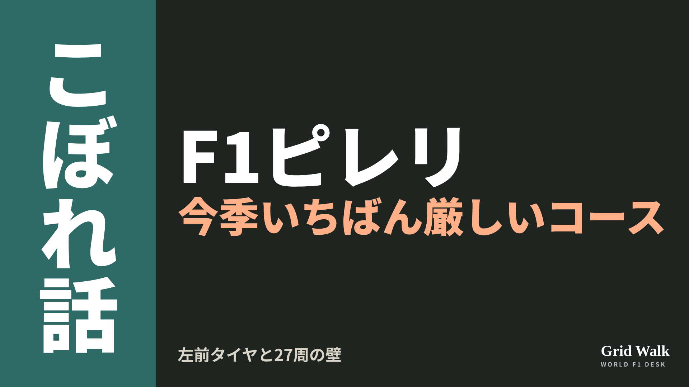<button class="cp dl" data-img="img/x_pirelli-qatar-most-demanding-20261128.png" data-name="x_pirelli-qatar-most-demanding-20261128.png">ダウンロード</button></li>
<li class="st"><div class="hd"><b>① noteをシェアするときの文</b></div><div class="bx" id="p5x0">ピレリ「今季いちばん厳しいコース」。カタールは左前タイヤの負担が大きく、27周の上限をどう扱うかも焦点です。金曜のデータからまとめました #F1jp #カタールGP</div><button class="cp" data-plain="p5x0">コピー</button></li>
<li class="st"><div class="hd"><b>② ①への返信</b></div><div class="bx" id="p5x1">ほかの海外記事も読みたい方は、F1 Grid Walkへ。
https://f1gridwalk.github.io/lens/pirelli-qatar-most-demanding-20261128/?utm_source=x&amp;utm_campaign=pirelli-qatar-most-demanding-20261128</div><button class="cp" data-plain="p5x1">コピー</button></li>
<li class="st"><div class="hd"><b>③ ②への返信</b></div><div class="bx" id="p5x2">毎日の海外F1ニュースは、日本語でこちらにまとめています。
https://f1gridwalk.github.io/</div><button class="cp" data-plain="p5x2">コピー</button></li>
</ol></section><section class="part" id="p6"><h2><span class="tag">OFF GRID</span>中団の先頭はレーシングブルズ　パーメイン「とても心強く見える」</h2><p class="sub">サイトに公開：16:08</p><ol class="steps">
<li class="st im"><div class="hd"><span class="no">1</span><b>見出し画像</b><em>画像</em></div>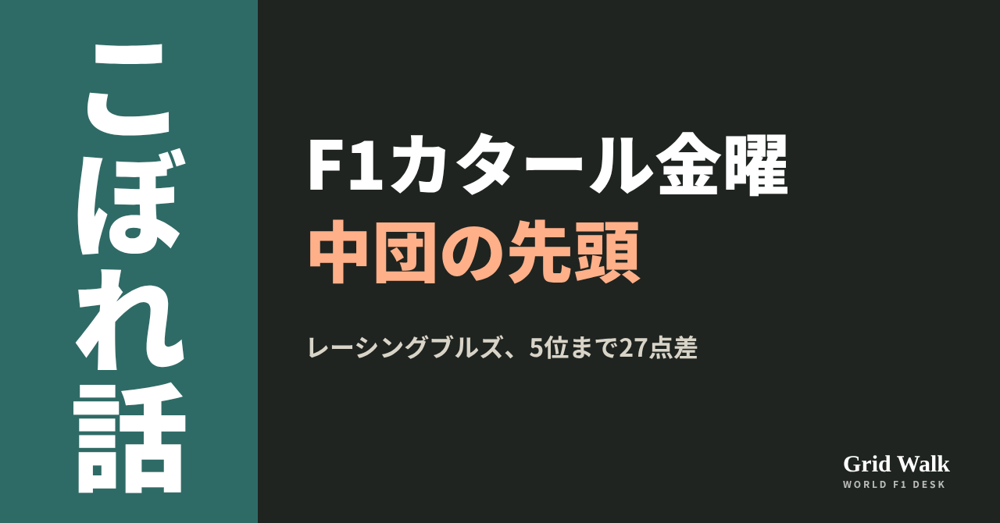<button class="cp dl" data-img="img/racing-bulls-best-of-rest-20261128.png" data-name="racing-bulls-best-of-rest-20261128_見出し画像.png">ダウンロード</button></li>
<li class="st"><div class="hd"><span class="no">2</span><b>タイトル</b></div><div class="bx" id="p6t">中団の先頭はレーシングブルズ　パーメイン「とても心強く見える」</div><button class="cp" data-plain="p6t">タイトルをコピー</button></li>
<li class="st"><div class="hd"><span class="no">3</span><b>本文</b></div><div class="bx tall" id="p6r"><p>カタールGPの金曜、2回目のフリー走行（FP2）で、レーシングブルズのリアム・ローソンが9番手、アービッド・リンドブラッドが10番手に入りました。前にいたのは上位4チームの8台だけです。イギリスのAutosportは11月27日の記事で、レーシングブルズをいまのところ中団の先頭と見ています。</p><p>アルピーヌが27点差まで詰めたラスベガスのコラムと、タイヤ27周の上限のルールブック、元の記事へのリンクはサイトで → <a href="https://f1gridwalk.github.io/lens/racing-bulls-best-of-rest-20261128/?utm_source=note&amp;utm_campaign=racing-bulls-best-of-rest-20261128">https://f1gridwalk.github.io/lens/racing-bulls-best-of-rest-20261128/?utm_source=note&amp;utm_campaign=racing-bulls-best-of-rest-20261128</a></p><h2>2回の走行のあいだに大きく変えた</h2><p>1回目のフリー走行（FP1）では、ローソンは14番手でした。オーストラリアのSpeedcafeによると、パワーユニットが正しく反応しない不具合がありました。F1公式サイトによると、チームは2回の走行のあいだに、アンダーステアを消すためフロントウイングを足す大きな変更をしました。FP2のタイムは1分24秒425でした（FIAの決定文書21）。</p><blockquote><p>「レースの週末に大きな変更をすることはあまりない。でも、やってみたら、クルマはずっと良くなった」（ローソン、F1公式サイト）</p></blockquote><blockquote><p>「1回目はアンダーステアで、ほとんどのチームが2回目に向けて、クルマの前側を強める似たようなことをしたと思う」（チーム代表のアラン・パーメイン、F1公式サイト）</p></blockquote><h2>表ではローソンが4番目</h2><p>Autosportは、FP2でミディアムタイヤを使った連続走行（ロングラン）の平均タイムを自ら計算し、表にしています（記事の試算・表）。周回数は9〜15周とまちまちです。メルセデス（アントネッリ）1分28秒269、レッドブル（フェルスタッペン）1分28秒949、マクラーレン（ノリス）1分29秒132に続き、4番目がローソンの1分29秒751・13周でした。後ろはアウディ（ヒュルケンベルグ）1分30秒778、ウィリアムズ（サインツ）1分31秒017、アルピーヌ（コラピント）1分31秒075、ハース（カマラ）1分31秒750、キャデラック（ボッタス）1分32秒665です。</p><p>ただ、表にフェラーリはいません。ハミルトンは3周でパワーユニットが止まり、ルクレールも比べられる周回は2周ほどでした。1周の速さではフェラーリがレーシングブルズより0.2秒前にいて、記事はいまの材料では、フェラーリはマクラーレンとレーシングブルズのあいだに入ると見ています。表で4番目でも、フェラーリより速いとまでは言えません。</p><p>Speedcafeが伝えた2人の言葉です。</p><blockquote><p>「ロングランのペースはとても心強く見える」（パーメイン、Speedcafe）</p></blockquote><blockquote><p>「とくに決勝は、タイヤの管理の面で難しくなりそうだ」（リンドブラッド、Speedcafe）</p></blockquote><p>タイヤ1セットで27周までという今年の上限は、ルールブック https://f1gridwalk.github.io/deep/rules/tyre-stint-limit/ で。</p><h2>5位まで27点、残りは2戦</h2><p>F1公式の順位では、ラスベガスGPを終えてレーシングブルズはコンストラクターズ5位の114点、6位のアルピーヌは87点で、差は27点です。アルピーヌがラスベガスで差を詰めた夜はコラム https://f1gridwalk.github.io/lens/alpine-double-points-vegas-20261122/ に。Autosportは、1周の速さでもレーシングブルズはアルピーヌとアウディよりかなり上にいると書く一方、アルピーヌはガスリーが砂利に出てロングランをしておらず、本当の速さはわからないとも断っています。アウディとハースの7位争いはコラム https://f1gridwalk.github.io/lens/haas-audi-seventh-place-20261125/ で。</p><p>編集部は、レーシングブルズに大事なのは中団の先頭という立場より、表の上では後ろのアルピーヌとの差が大きく見えることだと見ています。27点差を守る近道は2台そろって点を取ることで、決勝のペースの手ごたえは心強い材料です。答え合わせは日本時間29日未明の予選と30日未明の決勝です。</p><p><strong>残り2戦で27点差。レーシングブルズはコンストラクターズ5位を守り切れると思いますか？</strong></p><p>━━━━━━━━━━</p><p><strong>F1 Grid Walk では、世界のF1ニュースを毎日日本語でまとめています。</strong></p><p>海外の記事の要約を、毎日載せています。</p><p><a href="https://f1gridwalk.github.io/">https://f1gridwalk.github.io/</a></p><p>ほかの海外記事も読みたい方は、F1 Grid Walkへ。</p><p><a href="https://f1gridwalk.github.io/lens/racing-bulls-best-of-rest-20261128/">https://f1gridwalk.github.io/lens/racing-bulls-best-of-rest-20261128/</a></p><p>━━━━━━━━━━</p><p><a href="https://autosport.com/f1/news/what-we-learned-from-friday-practice-at-the-2026-f1-qatar-gp/10878447">出典：Autosport（イギリス）</a></p><p><a href="https://www.formula1.com/en/latest/article/racing-bulls-lead-the-midfield-charge-in-qatar-after-changes-pay-off.11wtPFM25qXm0dPTocDHRn">出典：F1公式サイト（イギリス）</a></p><p><a href="https://speedcafe.com/f1-news-2026-qatar-grand-prix-racing-bulls-liam-lawson-practice-reaction-comments-latest/">出典：Speedcafe（オーストラリア）</a></p><p><a href="https://www.fia.com/system/files/decision-document/2026_qatar_grand_prix_-_free_practice_2_classification.pdf">出典：FIA（国際）</a></p><p><a href="https://www.formula1.com/en/results/2026/races/1301/qatar/practice/1">出典：F1公式サイト（イギリス）</a></p><p><a href="https://www.formula1.com/en/results/2026/team">出典：F1公式サイト（イギリス）</a></p></div><button class="cp" data-rich="p6r">本文をコピー</button></li>
<li class="st"><div class="hd"><span class="no">4</span><b>ハッシュタグ</b></div><div class="bx" id="p6h">#F1 #F1jp #カタールGP #レーシングブルズ #ローソン #リンドブラッド #アルピーヌ #ロングラン #F1こぼれ話 #OFFGRID</div><button class="cp" data-plain="p6h">タグをコピー</button></li>
</ol><h3 class="xh">X</h3><ol class="steps">
<li class="st im"><div class="hd"><b>X用の画像</b><em>画像</em></div>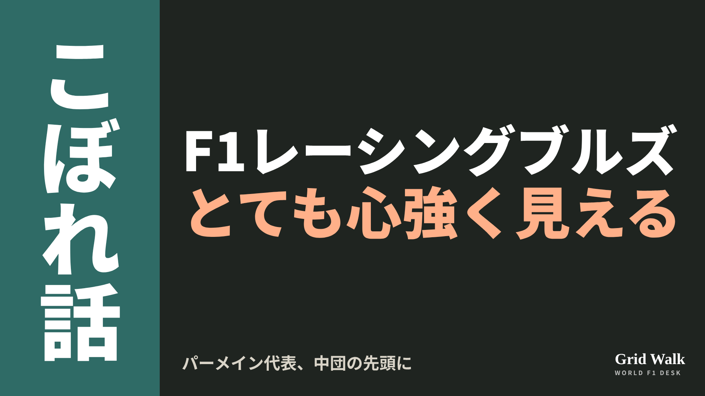<button class="cp dl" data-img="img/x_racing-bulls-best-of-rest-20261128.png" data-name="x_racing-bulls-best-of-rest-20261128.png">ダウンロード</button></li>
<li class="st"><div class="hd"><b>① noteをシェアするときの文</b></div><div class="bx" id="p6x0">カタールの金曜、中団の先頭はレーシングブルズ。パーメイン代表はロングランを「とても心強く見える」と話しました #F1jp #ローソン</div><button class="cp" data-plain="p6x0">コピー</button></li>
<li class="st"><div class="hd"><b>② ①への返信</b></div><div class="bx" id="p6x1">ほかの海外記事も読みたい方は、F1 Grid Walkへ。
https://f1gridwalk.github.io/lens/racing-bulls-best-of-rest-20261128/?utm_source=x&amp;utm_campaign=racing-bulls-best-of-rest-20261128</div><button class="cp" data-plain="p6x1">コピー</button></li>
<li class="st"><div class="hd"><b>③ ②への返信</b></div><div class="bx" id="p6x2">毎日の海外F1ニュースは、日本語でこちらにまとめています。
https://f1gridwalk.github.io/</div><button class="cp" data-plain="p6x2">コピー</button></li>
</ol></section></main><script>
function done(b,msg){const t=b.dataset.t||b.textContent;b.dataset.t=t;b.classList.add('ok');b.textContent=msg||'コピーしました';setTimeout(()=>{b.classList.remove('ok');b.textContent=t},2000)}
function selectEl(el){const r=document.createRange();r.selectNodeContents(el);const s=getSelection();s.removeAllRanges();s.addRange(r)}
async function rich(el,b){
  try{await navigator.clipboard.write([new ClipboardItem({'text/html':new Blob([el.innerHTML],{type:'text/html'}),'text/plain':new Blob([el.innerText],{type:'text/plain'})})]);done(b);return}catch(e){}
  selectEl(el);let ok=false;try{ok=document.execCommand('copy')}catch(e){}
  if(ok){getSelection().removeAllRanges();done(b)}else{done(b,'選択しました。コピーしてください')}}
async function plain(el,b){
  try{await navigator.clipboard.writeText(el.innerText);done(b);return}catch(e){}
  selectEl(el);let ok=false;try{ok=document.execCommand('copy')}catch(e){}
  if(ok){getSelection().removeAllRanges();done(b)}else{done(b,'選択しました。コピーしてください')}}
let dlns=null;(async()=>{try{dlns=await window.claude?.use?.("downloads")}catch(e){dlns=null}})();
async function img(src,b){
  b.dataset.t=b.dataset.t||b.textContent;
  if(!dlns){try{dlns=await window.claude?.use?.("downloads")}catch(e){}}
  if(!dlns){b.textContent='ダウンロードできませんでした';setTimeout(()=>{b.textContent=b.dataset.t},3500);return}
  try{const blob=await fetch(src).then(r=>r.blob());b.textContent='保存の確認を開いています…';
    await dlns.save({filename:b.dataset.name,data:blob});done(b,'ダウンロードしました')}
  catch(e){const c=e&&e.code;b.textContent=c==='declined'?'キャンセルしました':c==='rate_limited'?'少し待ってからもう一度押してください':'ダウンロードできませんでした';setTimeout(()=>{b.textContent=b.dataset.t},3500)}}
document.querySelectorAll('.cp').forEach(b=>b.addEventListener('click',()=>{
  if(b.dataset.rich)rich(document.getElementById(b.dataset.rich),b);
  else if(b.dataset.plain)plain(document.getElementById(b.dataset.plain),b);
  else img(b.dataset.img,b)}));
</script>